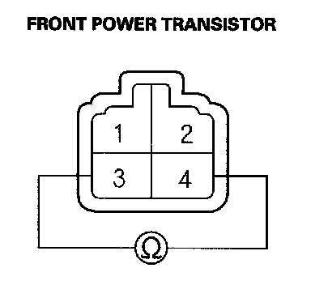
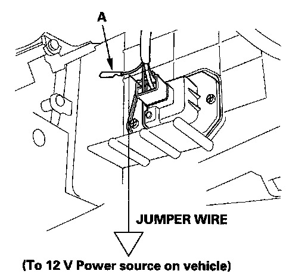

Front Power Transistor Test
Front Power Transistor Test1. Remove the passenger's dashboard undercover.
2. Disconnect the 4P connector from the front power transistor.

3. Measure the resistance between the No. 3 and No. 4 terminals of the front power transistor. It should be about 1.5 kohms.
- If the resistance is within the specifications, go to step 4.
- If the resistance is not within the specifications, replace the front power transistor.
NOTE: Also check the front blower motor. Front power transistor failure can be caused by a defective front blower motor.

4. Carefully release the lock tab on the No. 1 terminal (RED) (A) in the 4P connector, then remove the terminal and insulate it from body ground.
5. Reconnect the 4P connector to the front power transistor.
6. Make sure the RED wire is completely isolated, then supply 12 V to the No. 1 cavity with a jumper wire.
7. Turn the ignition switch ON (II), and check that the front blower motor runs.
- If the front blower motor does not run, replace the front power transistor.
NOTE: A faulty front blower motor can cause the front power transistor to fail. If the front power transistor is replaced, also check the front blower motor for binding, and replace it if necessary.
- If the front blower motor runs, the front power transistor is OK.